# Pseudo-code for DLinear
import torch.nn as nn
class DLinear(nn.Module):
def __init__(self, input_dim, output_dim, kernel_size):
super().__init__()
self.trend_layer = nn.Linear(input_dim, output_dim)
self.seasonal_layer = nn.Linear(input_dim, output_dim)
self.kernel_size = kernel_size
def forward(self, x):
# moving_average = torch.nn.functional.avg_pool1d for example
trend = moving_average(x, self.kernel_size)
seasonal = x - trend
trend_out = self.trend_layer(trend)
seasonal_out = self.seasonal_layer(seasonal)
return trend_out + seasonal_out
% Meta %
% Optional argument [#1]: Size modifier (e.g., , ) % #2: Opening delimiter % #3: Closing delimiter % #4: Content
% Common sets % Real numbers % Integers % Natural numbers % Rational numbers % Complex numbers
% Probability and statistics % Expectation % Variance % Covariance % Probability measure % Indicator function
% Linear algebra % Matrix% Vector % Trace % Rank % Range (image) % Projection
% Calculus and analysis % For integrals, e.g., f(x) x % Partial derivative \newcommand{[2]}{ #1} % Partial derivative w/o fraction% Second partial derivative % Gradient % Divergence % Curl
% Set theory % Set% Set builder notation % Union % Intersection % Symmetric difference
% Logic and proofs % Implies % If and only if % End of proof % Contradiction
% Norms and inner products % Norm% Inner product
% Common functions % Minimization problem % Maximization problem % Argument minimum % Argument maximum
% Subject to constraints % Sign function % Span of a set
% Formatting % Absolute value % Parentheses % Brackets % Floor function% Ceiling function
% Asymptotic notations % Big O notation % Small o notation % Big Omega notation % Big Theta notation
% Commonly used in algorithms and complexity % Polynomial time % Polylogarithmic time
% Additional probability notations % Independent and identically distributed % Distributed as
% Fourier transform % Fourier transform % Inverse Fourier transform
% General math % Display style
1 Introduction
Hello there!
Today I’ll be going over some of the most important and influential time series forecasting models in the machine learning community. My focus will be to capture the overall intuition behind each model and give a concise overview of their architecture. I’ll be skipping over the basics of time series forecasting, otherwise this post would have been far too long. You can find the definition of some of the terminologies I’ll be using in the Appendix.
Papers that are covered are:
- DeepAR: An early deep recurrent model for time series forecasting that worked quite well on a variety of datasets.
- N-BEATS: A deep residual model that uses basis functions to decompose the target variable.
- TFT: Google’s Transformer-based model.
- DLinear: A linear model that blew the transformers out of the water.
- FITS: A univariate linear model that operates on the frequency domain.
- PatchTST: A transformer-based model that uses patches to model the time series data.
- DAM: A univariate model that uses multi-head attention, fourier basis functions, and leverages irregularly spaced data.
- LightGBM: This is not a new model, but I have to mention it because it’s still widely used in practice and has a comparable performance.
Disclaimer: Opinions Ahead
Before diving in, I should note that this review is deliberately opinionated. I’ll be sharing my takes on these models based on my personal experience implementing and working with them. I also used the opportunity to dust off some old memes from my meme folder :) If that sounds good to you, let’s get started!
2 DeepAR
Amazon’s DeepAR (Salinas et al., 2020) was one of the early papers designed with having to be trained on large-scale data in mind. The first version of the paper was published in 2017, and this was the era where deep learning was still gaining traction as a solution that could benefit and scale to larger datasets.
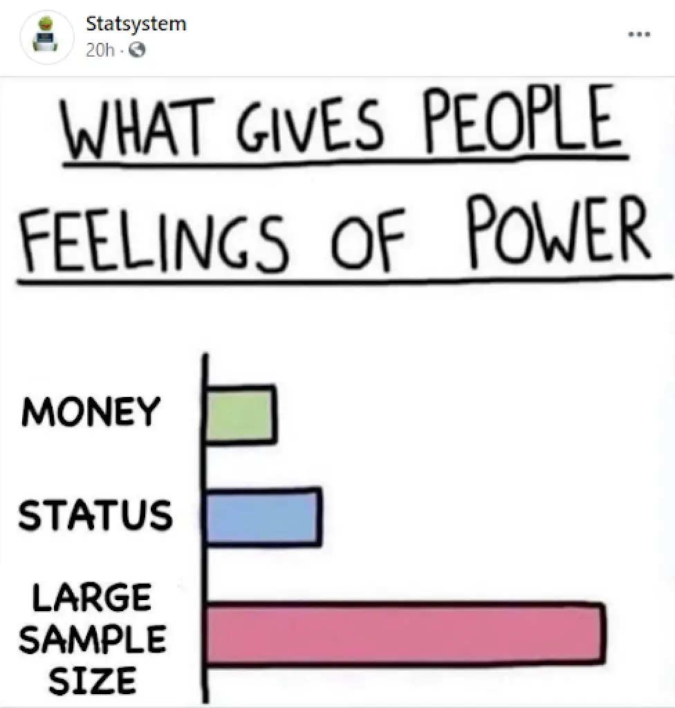
- The architecture uses a vanilla LSTM with the forget cell’s bias set to 1, encouraging the model to retain information from the previous time steps.
- The model outputs a probability distribution, from which both uncertainty estimates and point forecasts can be derived. In my opinion, this is the highlight of the paper. The appeal behind probabilistic forecasts is that they can be used in downstream applications, such as minimizing risk functions.
- A few ideas regarding the handling of different scales of data are explored.
How to make probabilistic forecasts?
The recipe is as follows:
Choose a distribution (e.g. Gaussian, Poisson, etc.) that best fits the target variable.
For real-valued data, such as stock prices or temperature readings, a Gaussian distribution is used: \(\mathcal{N}(\mu, \sigma^2) = \frac{1}{\sqrt{2\pi\sigma^2}} e^{-\frac{(y-\mu)^2}{2\sigma^2}}\).
For positive natural numbers, such as counts of ad impressions or number of sales, a Negative Binomial distribution \(\text{NB}(\mu, \alpha) = \binom{y+\alpha-1}{y} \left(\frac{\mu}{\mu+\alpha}\right)^y \left(\frac{\alpha}{\mu+\alpha}\right)^\alpha\) can be used, where \(\mu\) is the mean and \(\alpha\) is the dispersion parameter. 1 Poisson distribution is also an alternative (Chapados, 2014).
For classification tasks, a categorical distribution \(\text{Cat}(p) = \prod_{i=1}^K p_i^{y_i}\) is used, where \(y\) is the one-hot encoded target variable.2
Train the model to output the parameters of the chosen distribution by maximizing the likelihood of the observed data under the distribution, or in other words, minimize the negative log-likelihood (NLL) of the data. For example, for a Gaussian distribution the model would output the mean \(\mu_x\) and variance \(\sigma_x^2\) for input \(x\). For a categorical distribution the model would output the probabilities of each class.
Some parameters may be constrained, like the variance of a Gaussian distribution which must be positive. The paper uses a softplus activation function (see Figure 1) to ensure this:
\[\sigma = \log(1 + e^{\sigma_{\text{raw}}})\]In classification tasks, softmax is used to ensure the probabilities sum to 1.
Sample from the predicted distribution to make a point prediction.
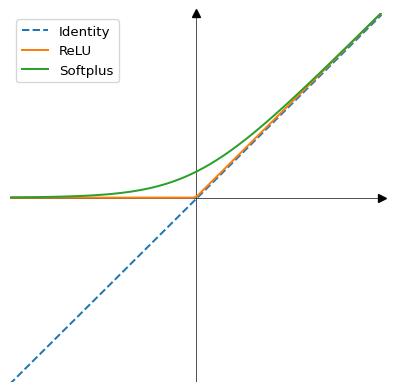
Scale handling
The main idea behind DeepAR is that instead of independently modeling each time series, e.g. a product’s sales in a specific store, the model can learn from all time series in the dataset, allowing the model to learn from the similarities between the time series. This is done by adding the product-specific features to the input along with the time series data. Categorical features such as these are embedded using an embedding layer.
One challenge is that time series may have different scales. For example, sales of a product in one store might be in the range of 0-10, while sales of another product in another store might be in the range of 1000-10000. To handle this:
- Instance normalization is used to normalize the time series, both in the context and the horizon, by dividing by the entire series by the mean of the series in the context window.
- Since the input and output are now scale-free, to give more weight to the series with larger scales, a non-uniform sampling regime is used to assign a higher probability to the series with larger scales.
Thoughts
The model is simple and straightforward. Having probabilistic forecasts is a nice touch, but it’s more nuanced than what is presented; Learning a distribution rather than a point estimate can sometimes backfire and lead to worse mean fits:
- Learning a multi-parameter distribution includes all the drawbacks of multi-task learning, where the rate of convergence and loss scaling can be different for each parameter. Gradnorm (Chen et al., 2018) proposes a gradient magnitude balancing scheme, but introduces an additional hyperparameter. Kendall et al. (2018) adds the loss scaling to the optimization, both for regression and classification tasks.
- In the case of Gaussian distributions, Seitzer et al. (2022) and Immer et al. (2024) discuss the natural parameterization of the distribution and posterior predictive. I especially recommend Immer et al. (2024) for a more in-depth discussion on the topic.
Regarding the scale handling, an alternative approach could be using a sample-weighted loss function instead of non-uniform sampling. On top of that, assigning higher importance to the series with larger scales isn’t something that is applicable to all datasets.
Code: Pytorch Forecasting
3 N-BEATS
N-BEATS (Oreshkin et al., 2019) is a univariate time series forecasting model consisting of a stack of linear layers, with skip connections between them. The model is claimed to be interpretable since the horizon function (considering the target values as a function of time) can be decomposed into a set of basis functions, such as polynomials and sinusoids. N-BEATS has been proven to be competitive in the M3 and M4 forecasting competitions, so the results speak for themselves.
Residual Blocks
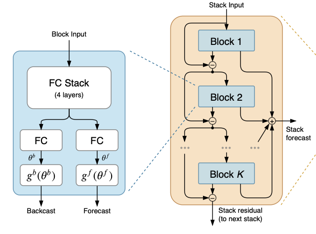
Building on the success of residual networks, which was first popularized through ResNet (He et al., 2016) and now used almost universally in deep learning, N-BEATS uses a stack of MLP blocks with skip connections. Each block (Figure 2) produces two outputs: a forecast and a residual.
- The forecast output of every block, irrespective of the block’s depth, is summed up to produce the final prediction.
- The residual output is subtracted from the block’s input and passed on to the next block in the stack as input. In the paper, this is referred to as the “backcast” signal, but I’ll get to that in a bit.
Basis Functions
By the Universal Approximation Theorem, a dense feedforward network can approximate any continuous function on a compact subset of R^n to arbitrary precision. However, this theoretical guarantee doesn’t speak to learnability or efficiency (Felbert, 2023). One approach is to constrain the model to learn the parameters of a basis function that best approximates the target variable. The basis function can be a polynomial (like Taylor expansion), a Fourier series, etc. The intuition is to add an inductive bias to the model which can help in generalizations and interpretability. This is not a novel idea and has been used extensively in the past.
For example, to model the target variable \(y \in \mathbb{R}^{T}\) with \(T\) being the horizon length, instead of producing \(T\) outputs the model can learn the coefficients of a polynomial of degree \(n\) that best fits the variable. The inference is then done by evaluating the polynomial at \(T\) points:
\[ \begin{array}{c} f(x) = \theta_0 + \theta_1 x + \theta_2 x^2 + \cdots + \theta_n x^n \\\\ \hat{y} = \left[f(1), f(2), \ldots, f(T)\right] \end{array} \tag{1}\]
where \(\hat{y}\) is the prediction. In practice, we use a normalized time domain between \([0, 1]\), so the evaluation becomes: \[ \hat{y} = \left[f(0), f(\frac{1}{T}), \ldots, f(\frac{T-1}{T})\right] \]
For a fourier basis, the function would be:
\[ \begin{gathered} f(x) = \sum_{i=1}^{n} a_n\cos(2 \pi i x) + b_n \sin(2 \pi i x) \end{gathered} \tag{2}\]
where \(i\) is the frequency of the sinusoid, and \(a_n\) and \(b_n\) are the learnable parameters. The number of frequencies \(n \leq T/2\) is a hyperparameter. If you’re new to Fourier series, this post is a good introduction.
Nyquist-Shannon Sampling Theorem
The \(T/2\) upper bound is due to the Nyquist-Shannon sampling theorem, which states that the highest frequency that can be represented in a signal is half the sampling rate. This is because the signal can be perfectly reconstructed from its samples if the sampling rate is at least twice the highest frequency in the signal.
A Stack of Stacks
What if we made the network deeper by stacking multiple stacks of building blocks? Well, that’s exactly what the authors imagined.

The same recipe used to connect the blocks within a stack is used to connect the stacks. Each stack produces a forecast and a residual, where the forecast is summed up to produce the final prediction, and the residual, i.e. the residual output of the last block in the stack, is passed on to the next stack as input (Figure 3). Aside from making the network deeper, this also allows to have stacks with different basis functions. Notably, one variation of N-BEATS uses two stacks, the first one learning a polynomial function of a small degree, and the second one learning a fourier decomposition. The idea is that first stack learns the overall trend of the time series, while the second stack learns the seasonality.
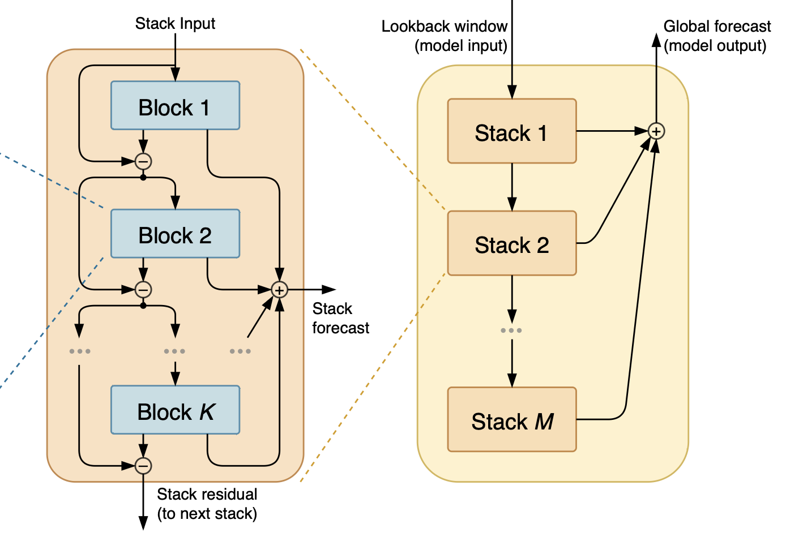
N-HiTS (Challu et al., 2023) is the follow up to N-BEATS, where hierarchical interpolation is added.
Thoughts
The “backcast” signal, aka the residual, threw me off big time. The paper mentions that the goal of having a backcast branch is to predict the input, forcing the model to retain information. On the other hand, when looking at the official implementation, the backcast output is not used in the loss function at all. At first I thought maybe I was missing something and having a backward forecasting is not the objective, but then I noticed even the Pytorch Forecasting library has implemented a backcast loss based on the paper. This is not universally true and some other libraries like Darts follow the official implementation. My main concern is:
- If “backcast” is not meant to be backward forecasting, then why call it backcast? Why not just call it a residual? This is confusing.
- If the goal is to predict the input, then it leads to another question. Based on Figure 2, the residual output of each block is subtracted from the input and passed on to the next block. Do we expect the network to learn to output zero-valued residuals so that information is retained post-subtraction?
On a side note, I was surprised that no data normalization is used in the model. At least that’s my understanding from the paper and the official implementation.
Code: ServiceNow/N-BEATS (Official)
Code: Pytorch Forecasting
4 TFT
Google’s Temporal Fusion Transformers (TFT) (Lim et al., 2021) is a transformer-based model that uses a combination of attention mechanisms to model the time series data, and it’s been popular in the field since 2019. The paper is well-written and easy to follow, so kudos to the authors for that. But the more you actually understand the architecture and the ablation studies, the more questioning it gets as to why certain design choices were made, and how they were presented in the paper.
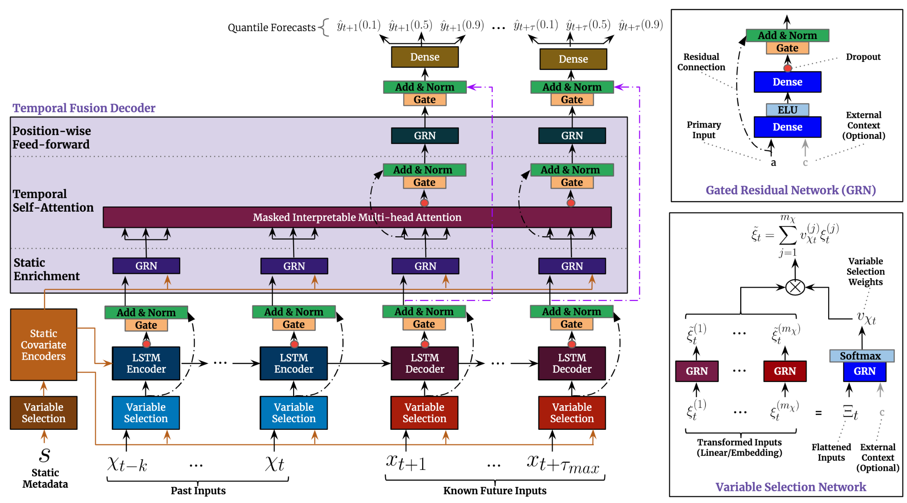
In a nutshell, TFT is a composition of:
A sequence-to-sequence LSTM encoder-decoder. This component is actually the core of the model based on the ablation studies, not the transformer (Figure 5).
A multi-head attention (MHA) mechanism takes the output of both the LSTM encoder and decoder as input.
- There’s a shortcut connection that bypasses the MHA. So the model can choose to ignore MHA if it’s not needed.
- It uses masked attention to maintain the causality of the time series.
The input features, are transformed, weighted, and then aggregated. The paper uses the term “Variable Selection” which in essence is a self-attention similar to (Qin et al., 2017). You can also go for a recurrent version like (Choi et al., 2016), but it wasn’t considered in the paper.
Gated residual blocks that resemble ResNet blocks are used in several places as computational blocks. They are present in static feature transformation, variable selection, before and after the MHA, etc. The gated block itself consists of a GLU (Shazeer, 2020), which in Noam’s own words, “we offer no explanation as to why these architectures seem to work; we attribute their success, as all else, to divine benevolence” 🙂
Quantile regression (Pinball loss) is used to predict the lower and upper quantiles of the target variable.
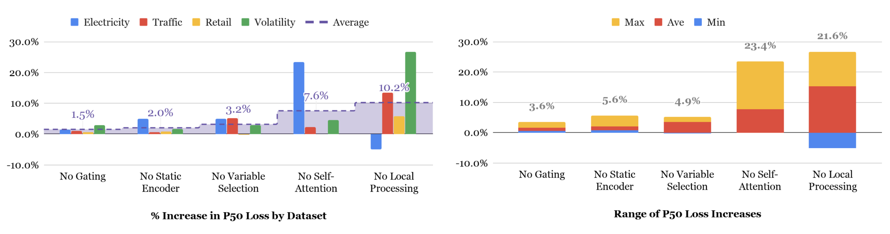
Code: Google Research (Official)
Code: Pytorch Forecasting
5 DLinear
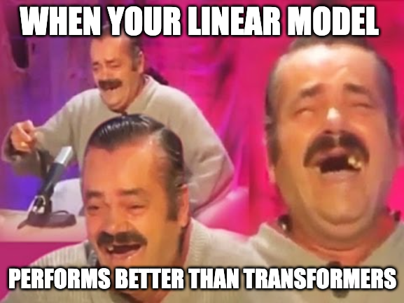
This one is quite intriguing. Zeng et al. (2023) showed a simple linear model can outperform transformer-based models such as Autoformer (Wu et al., 2021) and Informer (Zhou et al., 2021) in long-term forecasting on several benchmarks.
Two variants of the model are proposed:
- DLinear: It first decomposes the input into trend and seasonal components; A moving average is calculated and dubbed as “trend”, and the “seasonal” component is calculated by subtracting the trend from the input. Two linear layers are applied to each component separately, and the outputs are summed up to get the final prediction. That’s it!
- NLinear: First, it subtracts the input by the last value in the input sequence. The input then goes through a linear layer, and the subtracted part is added back before making the final prediction.
6 FITS
Frequency Interpolation Time Series (FITS) (Xu et al., 2023) is the continuation of DLinear (Section 5) but instead the linear model operates on the frequency domain. The model first applies a fourier transform to the input time series, then applies a noise removal followed by a linear projection, and finally applies an inverse fourier transform to get the final prediction. Torch has a built-in fft module that can be used for this purpose. The papers shows that FITS outperforms DLinear on multiple benchmarks, but we’ll get to that in a bit.
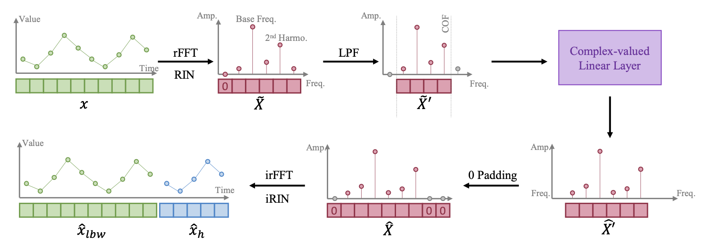
The authors also claimed that they had used Reversible Instance Normalization (RevIN) (Kim et al., 2021) to stabilize the training process. But when going through the official code, I noticed it uses a simple standardization and de-standardization process, that is widely used in the field, and was first introduced by (Ogasawara et al., 2010). I notified one of the authors about this, but sadly they’re not acknowledging the mistake.
If you’ve been following so far, then you’ll love to know that Toner and Darlow (2024) showed that DLinear and FITS can be reduced to simple linear regression of form \(y = Wx + b\), and that the closed-form solution (Silva, 2020) has superior performance most of the time compared to the mentioned models! So take everything with a grain of salt, and thread lightly.
Code: VEWOXIC/FITS (Official)
7 PatchTST
PatchTST (Nie et al., 2022) is basically the idea borrowed from Vision Transformers (ViT) (Dosovitskiy et al., 2020) but applied to time series data instead. It takes the input series, divides it into partially overlapping patches (intervals), applies a light transformation to each patch, feeds them to a transformer backbone, and then passes the output to a prediction head to make forecast. There are two more things worth noting:
In a multivariate setting, each time series (channel) is treated independently, but they share the same model and are optimized jointly.
The authors applied masked pre-training for self-supervision, which is a common practice in language models. During training, random patches are set to zero, and the task would be to predict the missing patches. For this purpose a different prediction head is used, but the transformer backbone and the patch transformation remains the same.
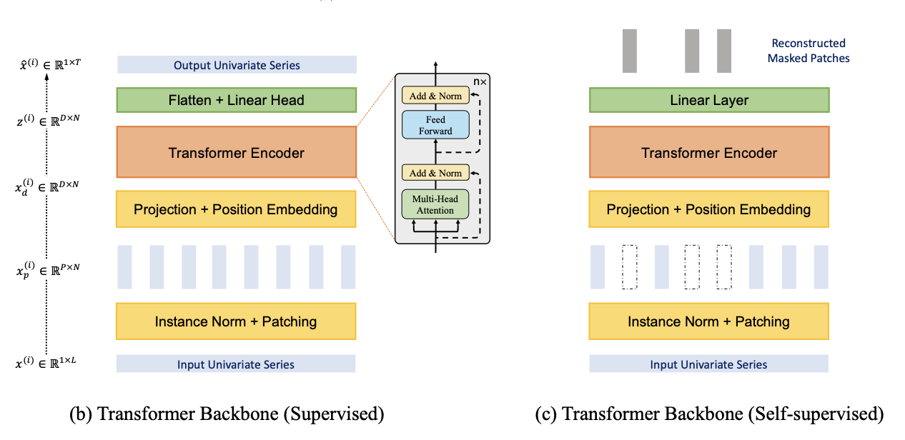
PatchTST is shown to have superior performance, consistently beating DLinear on multiple benchmarks.
Thinking out loud here, since PatchTST is mostly a ViT applied to time series data, I wonder if the extensions of ViT such as Swin Transformer (Liu et al., 2021) or T2T-ViT (Yuan et al., 2021) could be applied here as well. Or perhaps someone has already done it and I’m not aware of it :)
8 DAM
Deep data-dependent approximate analytical model (DAM) (Darlow et al., 2024) is a univariate model that leverages fourier series decomposition and multi-head attention, and mixes a few ideas from the previous models we’ve reviewed so far.
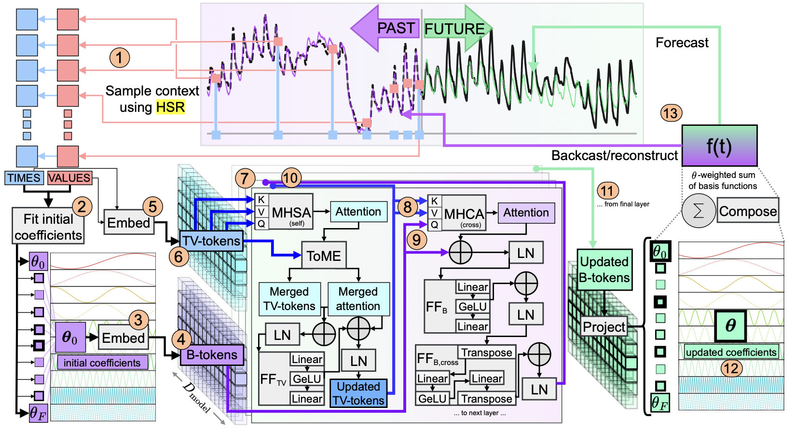
Somewhat similar to N-BEATS and FITS, it operates on the frequency domain and uses fourier basis functions to decompose both the input and the output.
Equation 2 is used to decompose the input time series using a linear solver. The authors pre-selected 437 frequencies that covers from 1 minute to 10 years, and the solver find the best coefficients that fit the input. The same equation is used as a basis function to generate the output, but the coefficients are learned by the model. Similar to FITS, the model makes predictions on both the lookback window and the forecast horizon (backcast and forecast).
The fourier decomposition of the input enables us to have input series sampled at irregular intervals, and DAM leverages this by using a history sampling regime (HSR) (Figure 9) with longer lookback windows. During training, data points are sampled from a long-tailed distribution based on the temporal distance, where recent data points are assigned a higher probability: \[p(t) = c^{-1} \frac{1}{1 + \frac{t}{\sigma}^2}\] where \(t\) is the normalized time relative to the last time step in the context window, \(\sigma\) is the width hyperparameter, and \(c\) is a normalization constant which is the sum of all unnormalized probabilities. Note that \(t < 0\) would refer to the context window, and \(t \geq 0\) would refer to the forecast horizon.
Besides the frequency transformation, DAM also embeds the time and value pairs of the input series, and then uses multi-head cross-attention to jointly learn from this and the frequency domain.
RevIN (Kim et al., 2021) is used to normalize the input series before any processing is done, but instead of using mean and standard deviation, the authors used the median and the inter-quartile range (IQR) to normalize the series, which is more robust to outliers. Conversely, the output series is de-normalized using the aforementioned statistics.
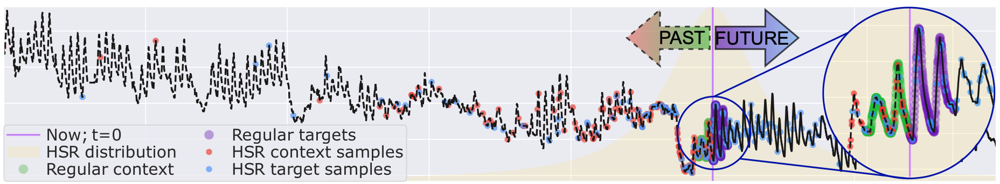
The model is shown to outperform DLinear and PatchTST, but bear in mind that it’s a univariate model.
You can find the code in the appendix of the paper.
9 LightGBM
The uncrowned king, LightGBM (Ke et al., 2017), is the special mention here because even though it’s not brought up as a comparison model in recent research papers, it’s still one of the most used models in the industry and Kaggle-like competitions, and has considerable performance in time-series forecasting, even though it’s mostly well-suited for tabular data.
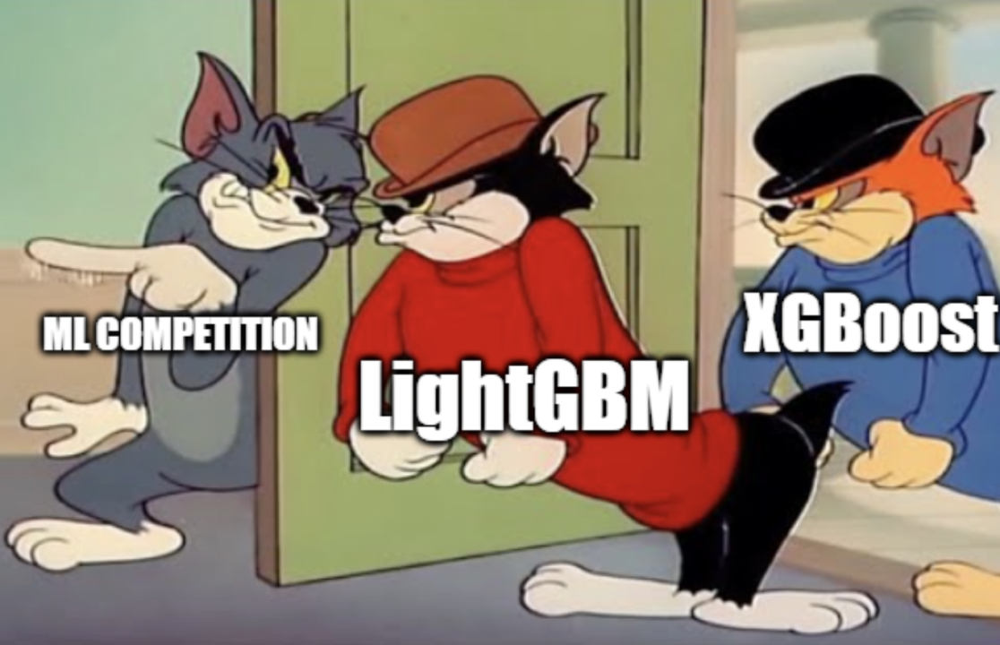
LightGBM and its counterparts (Catboost and Xgboost), are easy to set up and tune, and fast to train. Did I mention that they work very well with categorical data? In the time series forecasting setting, they’re autoregressive models that make one-step predictions. Most of the development time is often spent on feature engineering, feature selection and cross-validation. A few examples of features are:
- Lag features: The time series values at previous time steps, e.g. \(x_{t-1}, x_{t-7}, \ldots\).
- Rolling statistics: Rolling means, standard deviations, mins, and maxes over different windows can capture trends and volatility.
- Time-Based features: Cyclical encoding of time components (hour, day, week, month)
- Differential features: First and second-order differences, percentage changes, and rates of change help capture dynamics and remove trends.
10 Closing Thoughts
My takeaways from this review are that DLinear and LightGBM are strong baselines that are easy to set up and have decent performance. PatchTST also has a simple architecture, and could be a good starting point to extend and improve upon, for example by using the extensions of ViT.
I’m eager to try probabilistic forecasting and see whether probabilistic approaches, when properly implemented with appropriate uncertainty calibration, can lead to better results. I like the idea of decomposing the input and output into fourier series like in DAM, which allows for irregularly-spaced and long lookback and horizon windows.
One thing I would like to see in future papers is the inclusion of the persistence forecast as a baseline in the comparison section. Depending on the dataset, it can not only be a strong baseline, but also help us better understand the added value by the more complex models.
There wasn’t much time to go over the evaluation metrics, but given that most papers only report the MAE and MSE, it would be nice to see scale-free metrics like MASE (Mean Absolute Scaled Error) and sMAPE (Symmetric Mean Absolute Percentage Error) as well.
11 References
[1]
Cristian Challu, Kin G Olivares, Boris N Oreshkin, Federico Garza Ramirez, Max Mergenthaler Canseco, and Artur Dubrawski. Nhits: Neural hierarchical interpolation for time series forecasting, In Proceedings of the AAAI conference on artificial intelligence, 6989–6997, 2023.
[2]
Nicolas Chapados. Effective bayesian modeling of groups of related count time series, In Proceedings of the 31st international conference on machine learning, Bejing, China: PMLR, 1395–1403, 2014. Available: https://proceedings.mlr.press/v32/chapados14.html.
[3]
Zhao Chen, Vijay Badrinarayanan, Chen-Yu Lee, and Andrew Rabinovich. Gradnorm: Gradient normalization for adaptive loss balancing in deep multitask networks, In International conference on machine learning, PMLR, 794–803, 2018.
[4]
Edward Choi, Mohammad Taha Bahadori, Jimeng Sun, Joshua Kulas, Andy Schuetz, and Walter Stewart. Retain: An interpretable predictive model for healthcare using reverse time attention mechanism, Advances in neural information processing systems, vol. 29, 2016.
[5]
Luke Darlow, Qiwen Deng, Ahmed Hassan, Martin Asenov, Rajkarn Singh, Artjom Joosen, Adam Barker, and Amos Storkey. Dam: Towards a foundation model for time series forecasting, arXiv preprint arXiv:2407.17880, 2024.
[6]
Alexey Dosovitskiy, Lucas Beyer, Alexander Kolesnikov, Dirk Weissenborn, Xiaohua Zhai, Thomas Unterthiner, Mostafa Dehghani, Matthias Minderer, Georg Heigold, Sylvain Gelly, and others. An image is worth 16x16 words: Transformers for image recognition at scale, arXiv preprint arXiv:2010.11929, 2020.
[7]
Alexander von Felbert. The universal approximation theorem, 2023. Available: https://www.deep-mind.org/2023/03/26/the-universal-approximation-theorem/. Accessed: 26 March 2023.
[8]
Kaiming He, Xiangyu Zhang, Shaoqing Ren, and Jian Sun. Deep residual learning for image recognition, In Proceedings of the IEEE conference on computer vision and pattern recognition, 770–778, 2016.
[9]
Alexander Immer, Emanuele Palumbo, Alexander Marx, and Julia Vogt. Effective bayesian heteroscedastic regression with deep neural networks, Advances in Neural Information Processing Systems, vol. 36, 2024.
[10]
Guolin Ke, Qi Meng, Thomas Finley, Taifeng Wang, Wei Chen, Weidong Ma, Qiwei Ye, and Tie-Yan Liu. Lightgbm: A highly efficient gradient boosting decision tree, Advances in neural information processing systems, vol. 30, 2017.
[11]
Alex Kendall, Yarin Gal, and Roberto Cipolla. Multi-task learning using uncertainty to weigh losses for scene geometry and semantics, In Proceedings of the IEEE conference on computer vision and pattern recognition, 7482–7491, 2018.
[12]
Taesung Kim, Jinhee Kim, Yunwon Tae, Cheonbok Park, Jang-Ho Choi, and Jaegul Choo. Reversible instance normalization for accurate time-series forecasting against distribution shift, In International conference on learning representations, 2021.
[13]
Bryan Lim, Sercan Ö Arık, Nicolas Loeff, and Tomas Pfister. Temporal fusion transformers for interpretable multi-horizon time series forecasting, International Journal of Forecasting, vol. 37, no. 4, 1748–1764, 2021.
[14]
Ze Liu, Yutong Lin, Yue Cao, Han Hu, Yixuan Wei, Zheng Zhang, Stephen Lin, and Baining Guo. Swin transformer: Hierarchical vision transformer using shifted windows, In Proceedings of the IEEE/CVF international conference on computer vision, 10012–10022, 2021.
[15]
Yuqi Nie, Nam H Nguyen, Phanwadee Sinthong, and Jayant Kalagnanam. A time series is worth 64 words: Long-term forecasting with transformers, arXiv preprint arXiv:2211.14730, 2022.
[16]
Eduardo Ogasawara, Leonardo C Martinez, Daniel De Oliveira, Geraldo Zimbrão, Gisele L Pappa, and Marta Mattoso. Adaptive normalization: A novel data normalization approach for non-stationary time series, In The 2010 international joint conference on neural networks (IJCNN), IEEE, 1–8, 2010.
[17]
Boris N Oreshkin, Dmitri Carpov, Nicolas Chapados, and Yoshua Bengio. N-BEATS: Neural basis expansion analysis for interpretable time series forecasting, arXiv preprint arXiv:1905.10437, 2019.
[18]
Yao Qin, Dongjin Song, Haifeng Chen, Wei Cheng, Guofei Jiang, and Garrison Cottrell. A dual-stage attention-based recurrent neural network for time series prediction, arXiv preprint arXiv:1704.02971, 2017.
[19]
David Salinas, Valentin Flunkert, Jan Gasthaus, and Tim Januschowski. DeepAR: Probabilistic forecasting with autoregressive recurrent networks, International journal of forecasting, vol. 36, no. 3, 1181–1191, 2020.
[20]
Maximilian Seitzer, Arash Tavakoli, Dimitrije Antic, and Georg Martius. On the pitfalls of heteroscedastic uncertainty estimation with probabilistic neural networks, arXiv preprint arXiv:2203.09168, 2022.
[21]
Noam Shazeer. Glu variants improve transformer, arXiv preprint arXiv:2002.05202, 2020.
[22]
Thalles Santos Silva. Understanding linear regression using the singular value decomposition, https://sthalles.github.io, 2020. Available: https://sthalles.github.io/svd-for-regression/.
[23]
William Toner and Luke Darlow. An analysis of linear time series forecasting models, In Proceedings of the 41st international conference on machine learning, 48404–48427, 2024.
[24]
Haixu Wu, Jiehui Xu, Jianmin Wang, and Mingsheng Long. Autoformer: Decomposition transformers with auto-correlation for long-term series forecasting, Advances in neural information processing systems, vol. 34, 22419–22430, 2021.
[25]
Zhijian Xu, Ailing Zeng, and Qiang Xu. FITS: Modeling time series with \(10 k\) parameters, arXiv preprint arXiv:2307.03756, 2023.
[26]
Li Yuan, Yunpeng Chen, Tao Wang, Weihao Yu, Yujun Shi, Zi-Hang Jiang, Francis EH Tay, Jiashi Feng, and Shuicheng Yan. Tokens-to-token vit: Training vision transformers from scratch on imagenet, In Proceedings of the IEEE/CVF international conference on computer vision, 558–567, 2021.
[27]
Ailing Zeng, Muxi Chen, Lei Zhang, and Qiang Xu. Are transformers effective for time series forecasting?, In Proceedings of the AAAI conference on artificial intelligence, 11121–11128, 2023.
[28]
Haoyi Zhou, Shanghang Zhang, Jieqi Peng, Shuai Zhang, Jianxin Li, Hui Xiong, and Wancai Zhang. Informer: Beyond efficient transformer for long sequence time-series forecasting, In Proceedings of the AAAI conference on artificial intelligence, 11106–11115, 2021.
12 Appendix: Glossary of Terms
Autoregressive: The prefix “auto” means “self” in Greek. So “autoregressive” literally means “self-regressing” - the model regresses (predicts) a variable using previous values of the same variable.”
Iterative Forecasting: Also known as recursive forecasting or one-step-ahead forecasting. Forecasting that makes predictions one time step at a time. The model uses its own predictions as input for multi-step forecasting.
Direct Forecasting: Also known as direct multi-step forecasting. The model outputs the entire forecast horizon at once.
Context Window: Also known as lookback window, history window, or observation window. The fixed interval of past time steps used as input to the forecasting model. The data within the window can expressed as \(X = \left[x_{t-l+1}, x_{t-l+2}, ..., x_t\right]\) where \(l\) is the context length and \(t\) is the current time step.
Forecast Horizon: Also known as prediction window, target window, forecast window, or decoder output. The future time steps for which predictions are made by the model. Often denoted as \(Y = \left[y_{t+1}, y_{t+2}, ..., y_{t+h}\right]\) where \(h\) is the horizon length.
Backcast: Also known as backward forecasting or input reconstruction. The model’s attempt to reconstruct the input sequence often used as an intermediate step or auxiliary task for extra supervision.
Point Forecast: Also known as deterministic forecast or single-valued prediction. A single value prediction for each time step in the forecast horizon, representing the model’s best estimate.
Static Features/Covariates: Also known as time-invariant features, entity embeddings, or global features. Features that remain constant across all time steps for a given time series (e.g., store ID, product category).
Temporal Features: Also known as time-varying features, dynamic features, or exogenous variables. Features that change over time and may or may not be known in the forecast horizon (e.g., day of week, holidays, promotions).
Persistence Forecast: Also known as naive forecast. A simple forecasting method that assumes the future value will be the same as the last observed value: \(\hat{y}_{t+h} = y_t\) for any horizon \(h\), where \(\hat{y}\) is the forecast and \(y\) is the target variable. This baseline gives a lower bound for what we consider an acceptable model performance.
Univariate Forecasting: Also known as single-variable forecasting. Forecasting that considers only the past values of the target variable itself.
Multivariate Forecasting: Also known as multi-variable forecasting or multi-channel forecasting. Forecasting that incorporates multiple related time series or covariates in a single model.
Footnotes
There are several variations of the Negative Binomial distribution, and the one mentioned here is but one of them.↩︎
Minimizing the cross-entropy loss used in classification tasks is essentially equivalent to maximizing the log-likelihood of the model parameters under a categorical distribution assumption. For a categorical distribution with parameters \(p\), the NLL is: \[-\log P(y|p) = -\log \prod_{i=1}^K p_i^{y_i} = -\sum_{i=1}^K y_i \log p_i\]
While the cross-entropy loss is:
\[H(y,p) = -\sum_{i=1}^K y_i \log p_i\]↩︎
Reuse
Citation
BibTeX citation:
@online{sarang2025,
author = {Sarang, Nima},
title = {A {Review} of {ML} {Time} {Series} {Forecasting} {Models}},
date = {2025-02-28},
url = {https://www.nimasarang.com/blog/2025-02-28-time-series-forecasting/},
langid = {en}
}
For attribution, please cite this work as:
Nima Sarang. A Review of ML Time Series
Forecasting Models, 2025. Available: https://www.nimasarang.com/blog/2025-02-28-time-series-forecasting/.